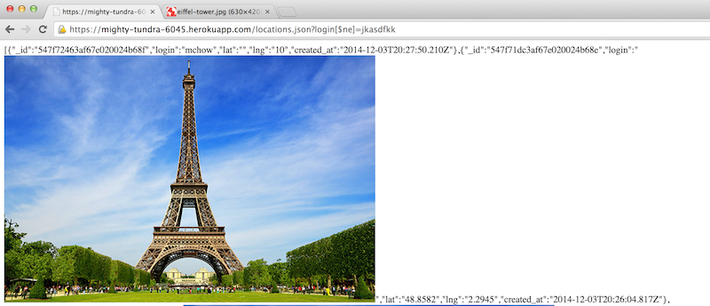
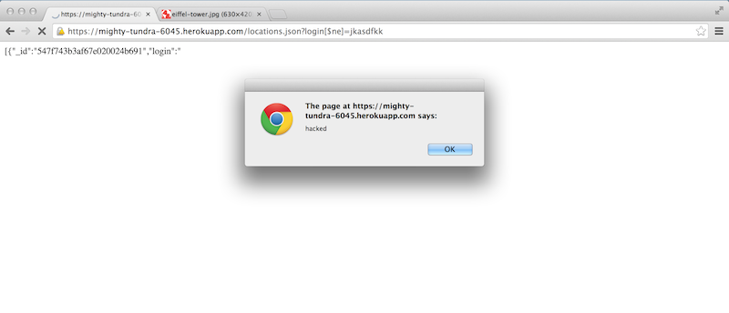
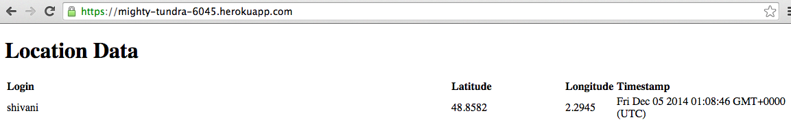
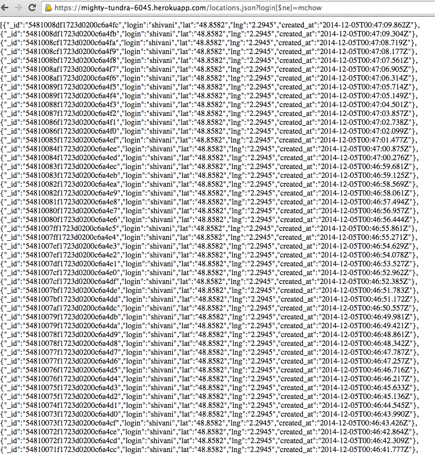
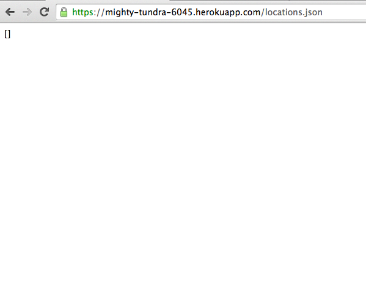
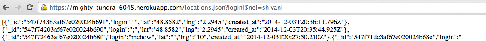

Security Assessment of Client-Side and Server-Side
Security Report completed by Shivani Sinha
Introduction
This assessment tests the security of Kirk Jackson's application. Kirk's application is intended to "maintain "location check-ins" (login, latitude, and longitude) for a long period of time." I have been hired to scope out and resolve any potential vulnerabilities and security issues in his web application.
Methodology
Attacks were performed by "black box" testing, or in other words, without having read the source code, and later by perusing through the original source code.
Abstract of Findings
One of the fundamental principles taught in Web Programming is to never trust user input, and as a solution, to implement server-side input validation. An attacker could plausibly submit false information, create alerts, and manipulate displayed data. Furthermore, the server can easily be overloaded with data, preventing the proper usage of the apllication. The culmination of the several vulnerabilities found in this web application make it unfit for general use until all security issues have been addressed.
Issues Found
Cross-Site Scripting (XSS)
- This flaw severly affects the GET API in several ways. This issue exists because data submitted by the user is not validated, which allows the user to submit essentially anything they would like. Since this means that submitted data can include JavaScript of HTML, I was able to send in an image, and even a script to cause an alert, for example, as the "login." Please see the images below for the proof of vulnerability.
- Such issues can be addressed by validating user input before it enters the database. This can be done by verfying that the characters used for values, such as the login, are not those used normally in HTML (such as square brackets or carrot brackets).


Submitting False Information
- Although not as severe of an issue as XXS, this flaw still affects the GET API. The user is able to fake their identity or location, simply by inputting an arbitrary latitude and longitude, or login. For example, I was able to set my location to be at the Eiffel Tower just by spefiying that location: In my test, I was, for example, able to set my location to be at the Eiffel Tower just by specifying my latitude and longitude: curl --data "login=shivani&lat=48.8482&lng=2.2945" https://mighty-tundra-6045.herokuapp.com/sendLocation. Please see the screen capture below for the proof of vulnerability
- Such an issue could possibly be addressed by using a geoIP, which would translate a computer's IP address to its latitude and longitude.

- Note that latitude = 48.8482 and longitude = 2.2945 are the coordinates of the Eiffel Tower, not those of Tufts University.
Overflow of the Server
- This, too, is a fairly severe issue affecting the database itself. Using a shell script loop, the command "curl --data "login=shivani&lat=48.8482&lng=2.2945" https://mighty-tundra-6045.herokuapp.com/sendLocation" can be run infinitely until the server has been overflowed. The database being used only allows for 5MB of data to be stored, which can easily be exceeded.
- Such an issue could be addressed by using a database that allows for more data storage by clearing the database when it has been overflowed, which is what was done here during testing.


Using the Mongo operator [$ne] (Not Equal)
- This is a sever issue that will directly affect /locations.json
- By using the operator [$ne], the user is able to manipulate the displayed data by excluding a specified login. This gives the user the power to track the activity of individuals, which is a severe breach in security of both the web application and the individual's whose check-in information is being tracked by it. Please see the screen capture below for proof of vulnerability.
- Such an issue can be avoided by guaranteeing that the field [$ne] cannot be included after "login" within the source code.
- Although the same image from above, note here in the URL bar the use of [$ne]. Here we are retrieving all logins not equal to "mchow." Had this operator not be included, mchow's checkins would be visible as well.

- Note in this image, however, login[$ne] has now been set equal to "shivani," and all check-ins by shivani have disappeared, but the one made by mchow is now visible.
Conclusion
The vulnerabilities and security issues found with this web application currently render it unfit. By making the specified changes, the application will immediately come more secure and be one step closer to being available for use. I highly recommend that these changes be implemented immediately and the application be resubmitted for further security testing. Naturally, some vulnerability will remain since the application depends on user input. For example, although we can ensure against Cross-Site Scripting, a user could still check-in using a fake name. Such issues can only be addressed by changing the overarching structure of the application. Please feel free to contact me if you have any further questions regarding the testing done, or future steps regarding this project.